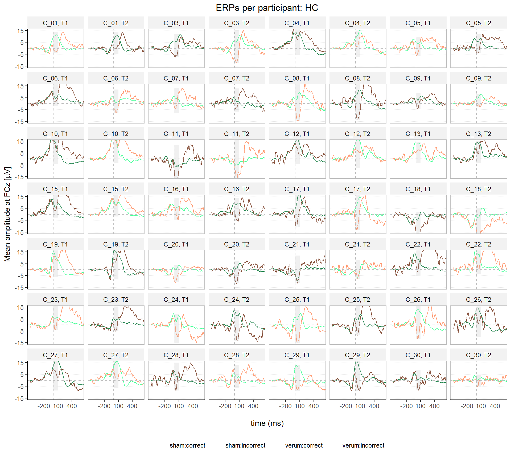
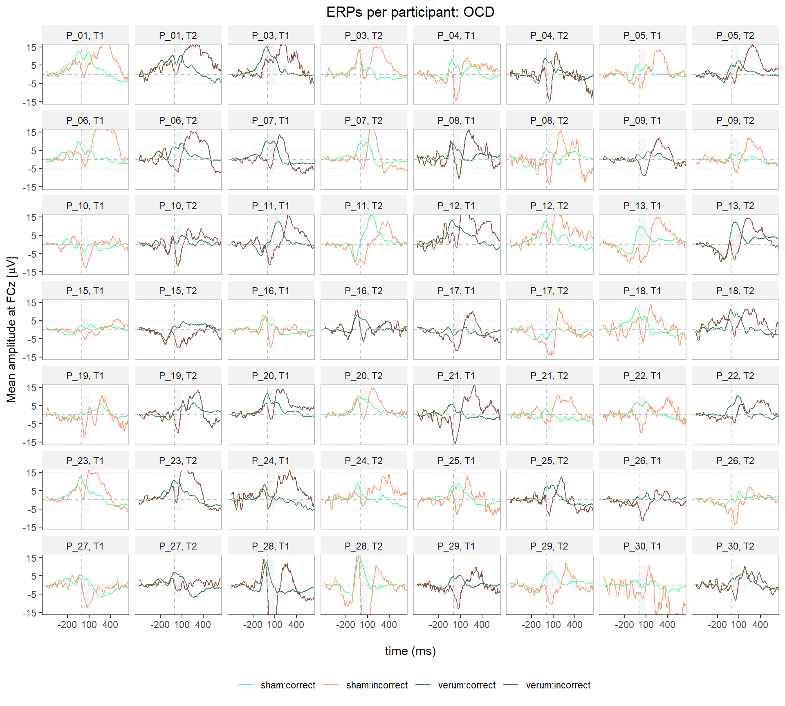

ERP Visualization
# Load data
resp_locked_data <- read.csv(file = "./data/response_locked_data_for_plots.csv", header = TRUE)
# Rename conditions
resp_locked_data$condition[resp_locked_data$condition == 1] <- "correct";
resp_locked_data$condition[resp_locked_data$condition == 2] <- "incorrect";
# Add stimulation condition variable
resp_locked_data$stimulation <- NA
resp_locked_data[
resp_locked_data$participant_id =="C_01_T1"| resp_locked_data$participant_id =="C_02_T1"| resp_locked_data$participant_id =="C_03_T2"|
resp_locked_data$participant_id =="C_04_T2"| resp_locked_data$participant_id =="C_05_T1"| resp_locked_data$participant_id =="C_06_T2"|
resp_locked_data$participant_id =="C_07_T1"| resp_locked_data$participant_id =="C_08_T1"| resp_locked_data$participant_id =="C_09_T2"|
resp_locked_data$participant_id =="C_10_T2"| resp_locked_data$participant_id =="C_11_T2"| resp_locked_data$participant_id =="C_12_T2"|
resp_locked_data$participant_id =="C_13_T1"| resp_locked_data$participant_id =="C_15_T2"| resp_locked_data$participant_id =="C_16_T1"|
resp_locked_data$participant_id =="C_17_T2"| resp_locked_data$participant_id =="C_18_T2"| resp_locked_data$participant_id =="C_19_T1"|
resp_locked_data$participant_id =="C_20_T1"| resp_locked_data$participant_id =="C_21_T2"| resp_locked_data$participant_id =="C_22_T2"|
resp_locked_data$participant_id =="C_23_T1"| resp_locked_data$participant_id =="C_24_T1"| resp_locked_data$participant_id =="C_25_T1"|
resp_locked_data$participant_id =="C_26_T1"| resp_locked_data$participant_id =="C_27_T2"| resp_locked_data$participant_id =="C_28_T2"|
resp_locked_data$participant_id =="C_29_T1"| resp_locked_data$participant_id =="C_30_T2"| resp_locked_data$participant_id =="P_01_T1"|
resp_locked_data$participant_id =="P_02_T2"| resp_locked_data$participant_id =="P_03_T2"| resp_locked_data$participant_id =="P_04_T1"|
resp_locked_data$participant_id =="P_05_T1"| resp_locked_data$participant_id =="P_06_T1"| resp_locked_data$participant_id =="P_07_T2"|
resp_locked_data$participant_id =="P_08_T2"| resp_locked_data$participant_id =="P_09_T2"| resp_locked_data$participant_id =="P_10_T1"|
resp_locked_data$participant_id =="P_11_T2"| resp_locked_data$participant_id =="P_12_T2"| resp_locked_data$participant_id =="P_13_T1"|
resp_locked_data$participant_id =="P_15_T1"| resp_locked_data$participant_id =="P_16_T1"| resp_locked_data$participant_id =="P_17_T2"|
resp_locked_data$participant_id =="P_18_T1"| resp_locked_data$participant_id =="P_19_T1"| resp_locked_data$participant_id =="P_20_T2"|
resp_locked_data$participant_id =="P_21_T2"| resp_locked_data$participant_id =="P_22_T1"| resp_locked_data$participant_id =="P_23_T1"|
resp_locked_data$participant_id =="P_24_T2"| resp_locked_data$participant_id =="P_25_T1"| resp_locked_data$participant_id =="P_26_T2"|
resp_locked_data$participant_id =="P_27_T1"| resp_locked_data$participant_id =="P_28_T2"| resp_locked_data$participant_id =="P_29_T2"|
resp_locked_data$participant_id =="P_30_T1",]$stimulation <- "sham"
resp_locked_data[
resp_locked_data$participant_id =="C_01_T2"| resp_locked_data$participant_id =="C_02_T2"| resp_locked_data$participant_id =="C_03_T1"|
resp_locked_data$participant_id =="C_04_T1"| resp_locked_data$participant_id =="C_05_T2"| resp_locked_data$participant_id =="C_06_T1"|
resp_locked_data$participant_id =="C_07_T2"| resp_locked_data$participant_id =="C_08_T2"| resp_locked_data$participant_id =="C_09_T1"|
resp_locked_data$participant_id =="C_10_T1"| resp_locked_data$participant_id =="C_11_T1"| resp_locked_data$participant_id =="C_12_T1"|
resp_locked_data$participant_id =="C_13_T2"| resp_locked_data$participant_id =="C_15_T1"| resp_locked_data$participant_id =="C_16_T2"|
resp_locked_data$participant_id =="C_17_T1"| resp_locked_data$participant_id =="C_18_T1"| resp_locked_data$participant_id =="C_19_T2"|
resp_locked_data$participant_id =="C_20_T2"| resp_locked_data$participant_id =="C_21_T1"| resp_locked_data$participant_id =="C_22_T1"|
resp_locked_data$participant_id =="C_23_T2"| resp_locked_data$participant_id =="C_24_T2"| resp_locked_data$participant_id =="C_25_T2"|
resp_locked_data$participant_id =="C_26_T2"| resp_locked_data$participant_id =="C_27_T1"| resp_locked_data$participant_id =="C_28_T1"|
resp_locked_data$participant_id =="C_29_T2"| resp_locked_data$participant_id =="C_30_T1"| resp_locked_data$participant_id =="P_01_T2"|
resp_locked_data$participant_id =="P_02_T1"| resp_locked_data$participant_id =="P_03_T1"| resp_locked_data$participant_id =="P_04_T2"|
resp_locked_data$participant_id =="P_05_T2"| resp_locked_data$participant_id =="P_06_T2"| resp_locked_data$participant_id =="P_07_T1"|
resp_locked_data$participant_id =="P_08_T1"| resp_locked_data$participant_id =="P_09_T1"| resp_locked_data$participant_id =="P_10_T2"|
resp_locked_data$participant_id =="P_11_T1"| resp_locked_data$participant_id =="P_12_T1"| resp_locked_data$participant_id =="P_13_T2"|
resp_locked_data$participant_id =="P_15_T2"| resp_locked_data$participant_id =="P_16_T2"| resp_locked_data$participant_id =="P_17_T1"|
resp_locked_data$participant_id =="P_18_T2"| resp_locked_data$participant_id =="P_19_T2"| resp_locked_data$participant_id =="P_20_T1"|
resp_locked_data$participant_id =="P_21_T1"| resp_locked_data$participant_id =="P_22_T2"| resp_locked_data$participant_id =="P_23_T2"|
resp_locked_data$participant_id =="P_24_T1"| resp_locked_data$participant_id =="P_25_T2"| resp_locked_data$participant_id =="P_26_T1"|
resp_locked_data$participant_id =="P_27_T2"| resp_locked_data$participant_id =="P_28_T1"| resp_locked_data$participant_id =="P_29_T1"|
resp_locked_data$participant_id =="P_30_T2",]$stimulation <- "verum"
# Add group and session variables and remove string '_T1/T2' from participant ID (to get correct number of factor levels later); make all factors
resp_locked_data <- resp_locked_data %>%
dplyr::mutate(
group = as.factor(ifelse(substr(participant_id, 1,1) == "C", "HC", "OCD")),
session = as.factor(ifelse(substr(participant_id, 6,7) == "T1", "T1", "T2")),
participant_id = as.factor(substr(participant_id, 1,4)),
condition = as.factor(condition),
stimulation = as.factor(stimulation)
)
# Exclude P_02 (due to retainer) and C_02 (as preregistered: patients are excluded with their match)
resp_locked_data <- resp_locked_data[resp_locked_data$participant_id != "P_02" & resp_locked_data$participant_id != "C_02",]
resp_locked_data$participant_id = as.factor(resp_locked_data$participant_id)ERP Trajectories
Per participant
# Plot ERPs per participant for HC
plot_per_participant_HC <- ggplot(resp_locked_data[resp_locked_data$group == "HC",],aes(time, FCz)) +
stat_summary(fun = mean, geom = "line", size = 0.5, linetype = "solid", aes(colour = stimulation:condition)) +
geom_vline(xintercept = 0, linetype = "dashed", colour="grey" ) +
geom_hline(yintercept = 0, linetype = "dashed", colour="grey") +
geom_ribbon(aes(xmin=0, xmax=100), alpha=.1, fill="grey70") +
coord_cartesian(ylim=c(-15, 15), xlim=c(-500,600)) +
scale_y_continuous(breaks=seq(-15, 15, 10)) +
scale_x_continuous(breaks=c(-200, 100, 400)) +
scale_colour_manual(values = my_figure_colors_2) +
facet_wrap(.~ participant_id+session, ncol = 8, labeller = labeller(.multi_line = FALSE, sep=": ")) +
ggtitle("ERPs per participant: HC") +
labs(x = "\ntime (ms)", y = expression(paste("Mean amplitude at FCz [",mu,"V]")), colour = "") +
theme(strip.text.x = element_text(margin = margin(0, 0, 0, 0))) +
my_figure_theme
# Save plot
ggsave("./figures/figure_ERPs_per_participant_HC.tiff", width = 36, height = 26, units = "cm", dpi=600, compression = "lzw")
# Display plot
plot_per_participant_HC
# Plot ERPs per participant for OCD
plot_per_participant_OCD <- ggplot(resp_locked_data[resp_locked_data$group == "OCD",],aes(time, FCz)) +
stat_summary(fun = mean, geom = "line", size = 0.5, linetype = "solid", aes(colour = stimulation:condition)) +
geom_vline(xintercept = 0, linetype = "dashed", colour="grey" ) +
geom_hline(yintercept = 0, linetype = "dashed", colour="grey") +
geom_ribbon(aes(xmin=0, xmax=100), alpha=.1, fill="grey70") +
coord_cartesian(ylim=c(-15, 15), xlim=c(-500,600)) +
scale_y_continuous(breaks=seq(-15, 15, 10)) +
scale_x_continuous(breaks=c(-200, 100, 400)) +
scale_colour_manual(values = my_figure_colors_2) +
facet_wrap(.~ participant_id+session, ncol = 8, labeller = labeller(.multi_line = FALSE, sep=": ")) +
ggtitle("ERPs per participant: OCD") +
labs(x = "\ntime (ms)", y = expression(paste("Mean amplitude at FCz [",mu,"V]")), colour = "") +
theme(strip.text.x = element_text(margin = margin(0, 0, 0, 0))) +
my_figure_theme
# Save plot
ggsave("./figures/figure_ERPs_per_participant_OCD.tiff", width = 36, height = 26, units = "cm", dpi=600, compression = "lzw")
# Display plot
plot_per_participant_OCD
ERPs as a function of group and stimulation
# Calculate running within-subject CIs
running_CIs_group_stim <- resp_locked_data %>%
split(.$time) %>%
map(~summarySEwithinO(data = .,
measurevar = "FCz",
withinvars = c("condition", "stimulation"),
betweenvars = "group",
idvar = "participant_id"))
# Calculate running within-subject CIs
CIs_group_stim <- purrr::map_df(running_CIs_group_stim,magrittr::extract) %>%
mutate(
time = rep(unique(resp_locked_data$time), each = 8) #Note, you'll have to change 3 to match the number of conditions
)
# Plot ERPs per stimulation by group
plot_stim_by_group <- ggplot(resp_locked_data,aes(time, FCz)) +
stat_summary(fun = mean, geom = "line", size = 0.5, linetype = "solid", aes(colour= stimulation:condition)) +
geom_ribbon(data = CIs_group_stim, aes(ymin = FCz-ci, ymax = FCz+ci, fill = stimulation:condition), alpha = 0.15) + guides(fill = "none") +
geom_vline(xintercept = 0, linetype = "dashed", colour="grey" ) +
geom_hline(yintercept = 0, linetype = "dashed", colour="grey") +
geom_ribbon(aes(xmin=0, xmax=100), alpha=.1, fill="grey70") +
coord_cartesian(ylim=c(-10,10), xlim=c(-500,1000)) +
scale_y_continuous(breaks=seq(-10,10,2)) +
scale_x_continuous(breaks=seq(-500,1000,200)) +
scale_colour_manual(values = my_figure_colors_2) +
scale_fill_manual(values = my_figure_colors_2) +
facet_grid(. ~ group) +
ggtitle("ERPs per stimulation by group") +
labs(x = "\ntime (ms)", y = expression(paste("Mean amplitude at FCz [",mu,"V]")), colour = "") +
my_figure_theme
# Plot ERPs per group by stimulation
plot_group_by_stim <- ggplot(resp_locked_data,aes(time, FCz)) +
stat_summary(fun = mean, geom = "line", size = 0.5, linetype = "solid", aes(colour= group:condition)) +
geom_ribbon(data = CIs_group_stim, aes(ymin = FCz-ci, ymax = FCz+ci, fill = group:condition), alpha = 0.15) + guides(fill = "none") +
geom_vline(xintercept = 0, linetype = "dashed", colour="grey" ) +
geom_hline(yintercept = 0, linetype = "dashed", colour="grey") +
geom_ribbon(aes(xmin=0, xmax=100), alpha=.1, fill="grey70") +
coord_cartesian(ylim=c(-10,10), xlim=c(-500,1000)) +
scale_y_continuous(breaks=seq(-10,10,2)) +
scale_x_continuous(breaks=seq(-500,1000,200)) +
scale_colour_manual(values = my_figure_colors_1) +
scale_fill_manual(values = my_figure_colors_1) +
facet_grid(. ~ stimulation) +
ggtitle("ERPs per group by stimulation") +
labs(x = "\ntime (ms)", y = expression(paste("Mean amplitude at FCz [",mu,"V]")), colour = "") +
my_figure_theme
# Arrange plots
figure_ERP_trajectories <- ggdraw() +
draw_plot(plot_stim_by_group, x = 0, y =.5, width = 1, height =.5) +
draw_plot(plot_group_by_stim, x = 0, y = 0, width = 1, height =.5) +
draw_plot_label(c("A", "B"), c(0, 0), c(1, .5), size = 15)
# Save plot
ggsave("./figures/figure_ERP_trajectories.tiff", width = 14, height = 18, units = "cm", dpi=600, compression = "lzw")
# Display plot
figure_ERP_trajectories
Note. Response-locked ERP trajectories (mean amplitude at FCz from 0 to 100 ms) as a function of (A) stimulation by group and (B) group by stimulation. Shaded areas represent 95% CIs and are adjusted for within-participant designs as described by Morey (2008).